File: 000090.gt.txt (if the image is defective, simply delete all Arabic text and the line will be excluded)
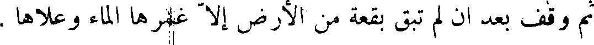
ثم وقف بعد أن لم تبق بقعة من الأرض إلا غمرها الماء وعلاها .
File: 000091.gt.txt (if the image is defective, simply delete all Arabic text and the line will be excluded)
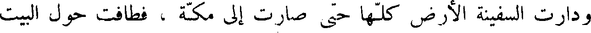
ودارت السفينة الأرض كلها حتى صارت إلى مكة ، فطافت حول البيت
File: 000092.gt.txt (if the image is defective, simply delete all Arabic text and the line will be excluded)
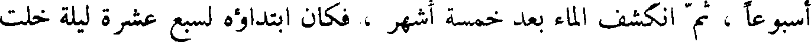
أسبوعاً ، ثم انكشف الماء بعد خمسة اشهر ، فكان ابتداؤه لسبع عشرة ليلة خلت
File: 000093.gt.txt (if the image is defective, simply delete all Arabic text and the line will be excluded)
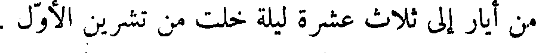
من أيار إلى ثلاث عشرة ليلة خلت من تشرين أول .
File: 000094.gt.txt (if the image is defective, simply delete all Arabic text and the line will be excluded)
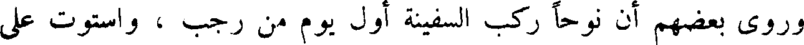
وروى بعضهم أن نوحاً ركب السفينة أول يوم من رجب ، واستوت على
File: 000095.gt.txt (if the image is defective, simply delete all Arabic text and the line will be excluded)
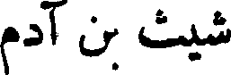
شيث بن آدم
File: 000096.gt.txt (if the image is defective, simply delete all Arabic text and the line will be excluded)
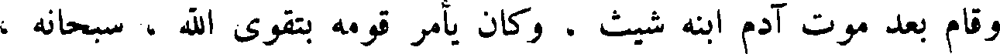
وقام بعد موت آدم ابنه شيث وكان يأمر قومه بتقوى الله سبحانه
File: 000097.gt.txt (if the image is defective, simply delete all Arabic text and the line will be excluded)
والعمل الصالح ، وكانوا يسبحون الله ويقدسونه ، وأبناؤهم ونساؤهم ليس
File: 000098.gt.txt (if the image is defective, simply delete all Arabic text and the line will be excluded)
بينهم عداوة ، ولا تحاسد ، ولا تباغض ، ولا تهمة ، ولا كذب ، ولا خلف ،
File: 000099.gt.txt (if the image is defective, simply delete all Arabic text and the line will be excluded)
وكان أحدهم إذا أراد أن يحلف قال : لا ودم هابيل .
File: 000100.gt.txt (if the image is defective, simply delete all Arabic text and the line will be excluded)
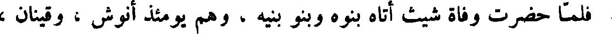
فلما حضرت وفاة شيث أتاه بنوه وبنو بنيه ، وهم يومئذ أنوش ، و قينان ،
File: 000101.gt.txt (if the image is defective, simply delete all Arabic text and the line will be excluded)
و مهلائيل ويرد ، واخنوخ ، ونساؤهم وأبناؤهم ، فصلى عليهم ، ودعا لهم
File: 000102.gt.txt (if the image is defective, simply delete all Arabic text and the line will be excluded)
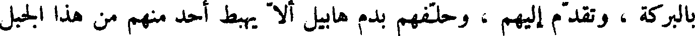
بالبركة ، وتقدم إليهم ، وحلفهم بدم هابيل ألا يهبط أحد منهم من هذا الجبل
File: 000103.gt.txt (if the image is defective, simply delete all Arabic text and the line will be excluded)
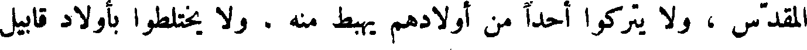
المقدس ، و لا يتركوا أحدا من أولادهم يهبط منه . و لا يختلطوا بأولاد قابيل
File: 000104.gt.txt (if the image is defective, simply delete all Arabic text and the line will be excluded)
الملعون ، وأوصى إلى انوش ابنه ، وأمره أن يحتفظ في بجسد آدم ، وأن يتقي الله ،
File: 000105.gt.txt (if the image is defective, simply delete all Arabic text and the line will be excluded)
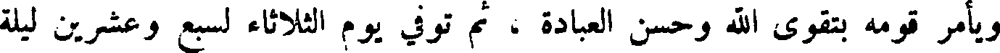
ويأمر قومه بتقوي الله وحسن العبادة ، ثم توفي يوم الثلاثاء لسبع وعشرين ليلة
File: 000106.gt.txt (if the image is defective, simply delete all Arabic text and the line will be excluded)
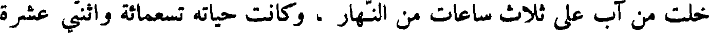
خلت من آب على ثلاث ساعات من النهار ، وكانت حياته تسعمائة وأثنتي عشرة
File: 000107.gt.txt (if the image is defective, simply delete all Arabic text and the line will be excluded)
انوش بن شيث
File: 000108.gt.txt (if the image is defective, simply delete all Arabic text and the line will be excluded)
سنة .
File: 000109.gt.txt (if the image is defective, simply delete all Arabic text and the line will be excluded)
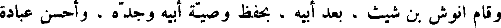
وقام انوش بن شيث ، بعد أبيه ، بحفظ وصية أبيه وجده . وأحسن عبادة
File: 000110.gt.txt (if the image is defective, simply delete all Arabic text and the line will be excluded)
الله ، وأمر قومه بحسن العبادة ، وفي أيامه قتل قابيل الملعون ، رماه لمك الأعمى
File: 000111.gt.txt (if the image is defective, simply delete all Arabic text and the line will be excluded)
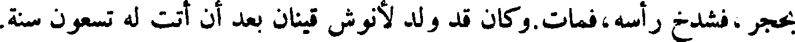
بحجر ، فشدخ رأسه ، فمات. وكان قد ولد لأنوش قينان بعد أن أتت له تسعون سنة.
File: 000112.gt.txt (if the image is defective, simply delete all Arabic text and the line will be excluded)
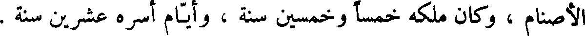
الأصنام ، وكان ملكه خمسا وخمسين سنة ، وأيام أسره عشرين سنه .
File: 000113.gt.txt (if the image is defective, simply delete all Arabic text and the line will be excluded)
ثم ملك امون بن منشا ، فأعاد الأصنام حتى كثرت ، وكان ملكه ست
File: 000114.gt.txt (if the image is defective, simply delete all Arabic text and the line will be excluded)
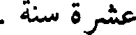
عشرة سنة .
File: 000115.gt.txt (if the image is defective, simply delete all Arabic text and the line will be excluded)
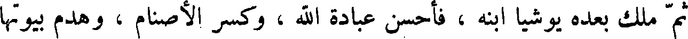
ثم ملك بعده يوشيا ابنه ، فأحسن عبادة الله ، تعالى وكسر الأصنام ، وهدم بيوتها
File: 000116.gt.txt (if the image is defective, simply delete all Arabic text and the line will be excluded)
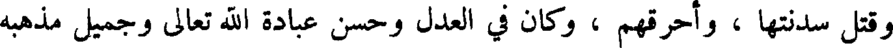
وقتل سدنتها واحرقهم ، وكان في العدل وحسن عبادة الله وجميل مذهبه
File: 000117.gt.txt (if the image is defective, simply delete all Arabic text and the line will be excluded)
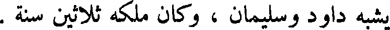
يشبه داود وسليمان ، وكان ملكه ثلاثين سنة .
File: 000118.gt.txt (if the image is defective, simply delete all Arabic text and the line will be excluded)
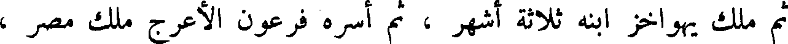
ثم ملك يهواخز ابنه ثلاثة أشهر ، ثم أسره فرعون الأعرج ملك مصر ،
File: 000119.gt.txt (if the image is defective, simply delete all Arabic text and the line will be excluded)
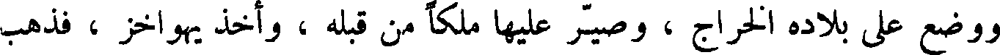
ووضع على بلاده الخراج ، وصير عليها ملكا من قبله ، وأخذ يهواخز ، فذهب
To Save: `Ctrl+s`, make sure to choose `Webpage, complete`!